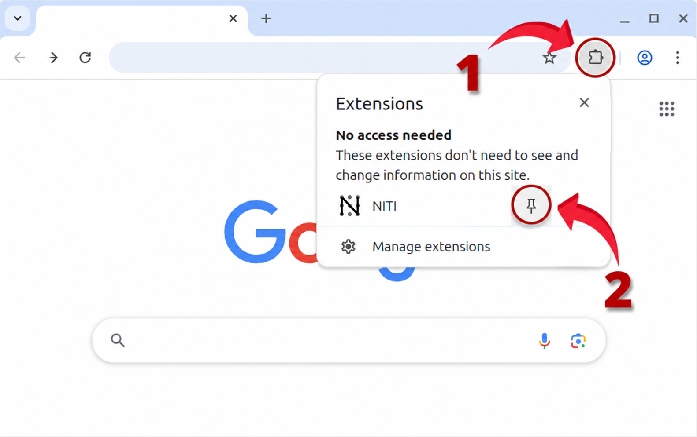
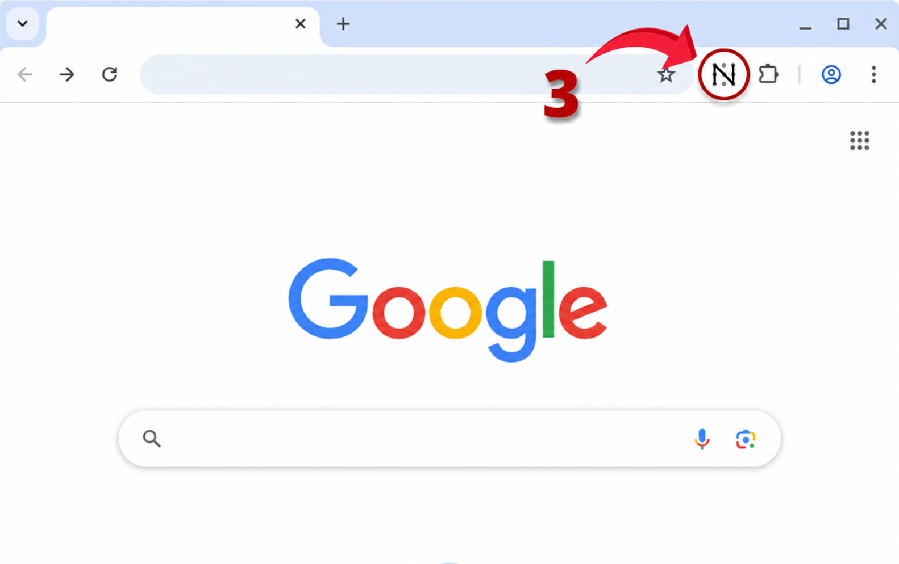

1
Open Extensions
Select the puzzle-piece icon in the top-right corner of Chrome.

NITI for Chrome
Pin NITI once and keep your daily tasks one click away.
Select the puzzle-piece icon in the top-right corner of Chrome.

Find NITI in the extension list, then select its pin icon.
Use the NITI icon in your toolbar whenever you want to plan your day.
